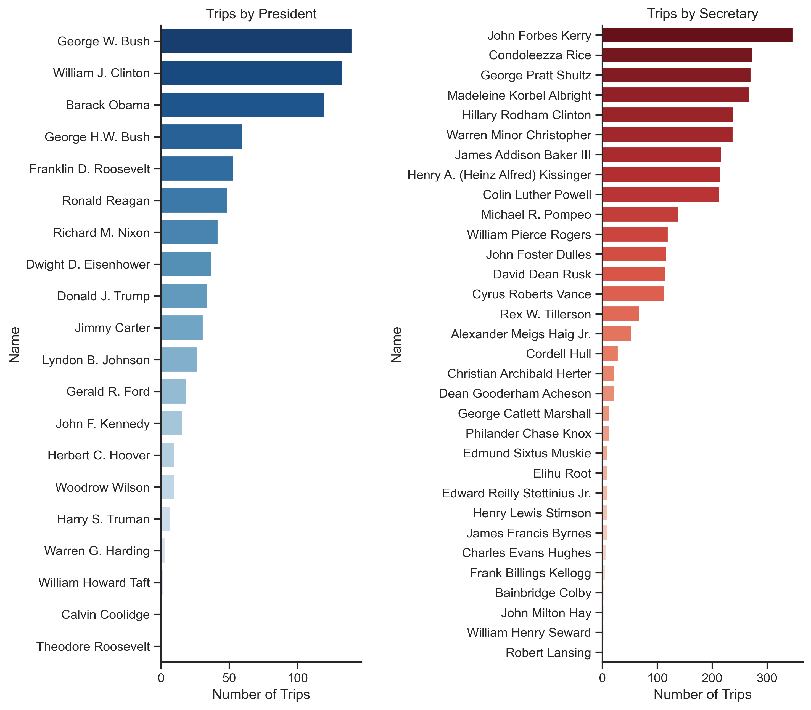
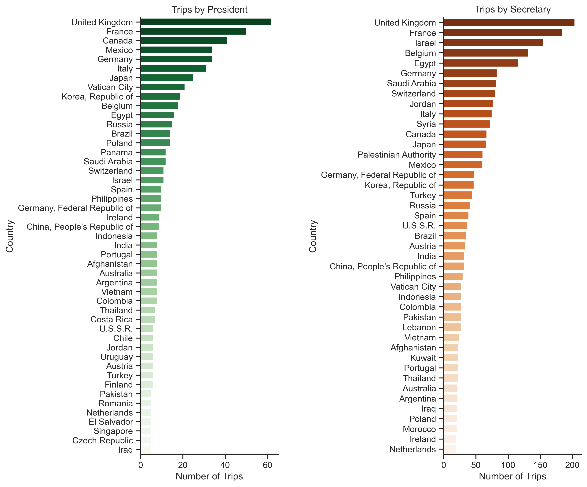
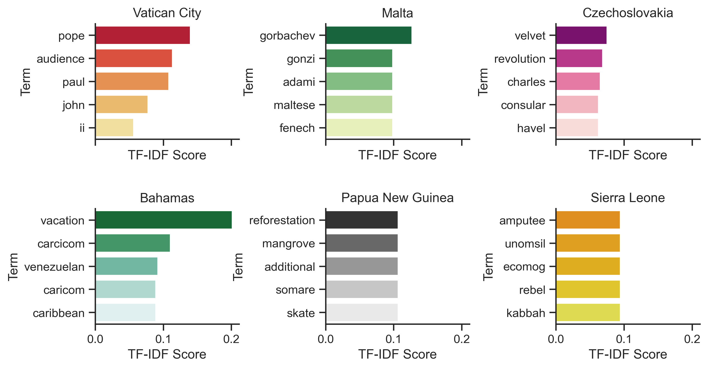

Project
U.S. Officials Travel Analysis

Tolya Evdokimov
Author
#unsupervised_learning #natural_language_processing #data_science
The inspiration for this small project came from some work that I've done for my intro data science class. I was working with an amazing "U.S. officials gifts" dataset scraped by Alex Cookson and found some interesting spikes in foreign officials gift-giving during some months and was wondering whether this could be correlated with the foreign travel of some U.S. officials. I came across a U.S. Historian page dedicated to documenting foreign travel of all U.S. presidents and secretaries and thought that it might be an interesting dataset to look at on its own.
The link to the GitHub Repo for the project is at the bottom of the page.
The Question
Have you thought about how often a president might travel and where they usually go? The first thing that comes to my naïve mind is vacation 🌴. You might think about meetings, summits, funerals perhaps? As we will see, it can get a bit more interesting, ...kind of.
To guide my presidential travel exploration I want to set a few research questions:
• How the travel of a president and a secretary is different (both in "content" and length)?
• What are the most popular reasons for a U.S. official to travel abroad?
• Are the reasons for travel different across countries?
The Data
The raw data were scraped from the website using BeautifulSoup. The raw data sample is shown below and is available in the project GitHub repo. Here is a short data dictionary:
• visit_type [chr]: who visited a particular country (president/secretary)
• name [chr]: name of the president/secretary
• country [chr]: country visited
• locale [chr]: city/region visited
• remarks [chr]: the description of the visit provided by the U.S. Historian page
• date [chr]: date range of the visit
| visit_type | name | country | locale | remarks | date |
|---|---|---|---|---|---|
| president | Woodrow Wilson | United Kingdom | Bermuda | Vacation. [Visit made as President-elect.] | "November 18–December 13, 1912" |
| secretary | John Foster Dulles | Pakistan | Karachi | Attended Second SEATO Council Meeting. | "March 5–9, 1956" |
| president | Donald J. Trump | Switzerland | Davos | Attended the 2018 World Economic Forum. | "January 24–26, 2018" |
The dataset clearly needs quite a bit of cleaning and transformation to be ready for the analyses. Since I will primarily focus on the textual portion of the data, I cleaned capitalization and punctuation + removed any other non-word symbols like digits, brackets, etc.. Finally, I lemmatized the words using nltk WordNetLemmatizer.
To standardize the dates I broke them up into start date and end date of the visit as well as transformed them into the standard ISO format. There were several UTF-8 translation artifacts that I also removed. The tidy dataset sample is shown below (note that the text here is not cleaned yet):
| event_id | visit_type | name | country | locale | remarks | date_start | date_end |
|---|---|---|---|---|---|---|---|
| 1 | president | William Howard Taft | Panama | Colon | Inspected construction of Panama Canal.... | 1909-01-29 | 1909-02-07 |
| 1 | president | William Howard Taft | Panama | Panama City | Inspected construction of Panama Canal.... | 1909-01-29 | 1909-02-07 |
| 664 | president | Barack Obama | Norway | Oslo | Met with King Harald V and Queen Sonja.... | 2009-12-10 | 2009-12-11 |
| 804 | secretary | Elihu Root | Brazil | Pernambuco | Attended Third International.... | 1906-07-17 | 1906-08-07 |
| 804 | secretary | Elihu Root | Brazil | Bahia | Attended Third International.... | 1906-07-17 | 1906-08-07 |
There is one very important caveat with the tidy dataset: the event_id feature describes a unique country visit, not a unique city/region visit. I separated city/regions into several rows to ease the by-city analysis (and also to put the dataset into 1NF). This does create a lot of redundancy in the data, but if city/region is not important, it is also easy to drop the duplicates.
Exploratory Data Analysis (EDA)
Before we I dive into more complex modeling, I want to do some exploratory analyses looking at some basic trends in the data. There are a lot of components and potential things to do, but I will just focus in on a few basic plots and one more complex one that required a little more feature engineering.
Overall, it looks like secretaries travel more in general. Bush, Clinton, and Obama have the most trips out of all presidents, and Kerry, Rice, and Shultz have the most out of the secretaries. On average, presidents have around 40 foreign trips during their term, while secretaries have around 100. Next, let's look where most of the trips happen.
By far, the most visited country by the U.S. officials is the United Kingdom which makes sense since UK is one of the largest U.S. allies. UK is then followed by France, then the countries for president and secretary change. I found the fact that presidents travel disproportionately more to Vatican City particularly interesting. Presidents usually meet the pope and attend events there, but secretaries travel there less. Each country visited by a president gets around 13.6 visits from them on average, while each country visited by a secretary gets around 54.4 visits.
Finally, as a part of EDA, I would like to look at average number of days in a trip by year.
To make this plot I first calculated the time for the trip (there were many zeros for one-day trips), then I averaged those times by year. I also calculated the proportion of trips each year attended by a secretary to get an understanding on how travel has changed over time. I've fit the linear regression model to see the trend.
It is very clear that in the past, U.S. officials were more likely to travel for longer. There were also a few years when proportion of presidents traveling was almost the same or higher compared to secretaries. There was also a lot of variability in the travel length between around 1910s and 1960s which is very interesting, however I would need more information to interpret that. However, as the time progressed, we see less time per trip and less trips per president. There is also a significant dip in 2020 likely due to the COVID-19 pandemic.
Now that we have covered the basic trends, let's move on to analyzing the textual data.
The most relevant keywords (class-based TF-IDF)
TF-IDF is a powerful scaling technique often used as an input to other unsupervised models. It also can be used on its own to look at the most descriptive terms in a document. The standard TfIdfVectorizer supplied by scikit-learn has an optimized and stable implementation which works great when looking at the by-document TF-IDF vectors.
However, our travel dataset has several limitations. First, short documents, just like in our dataset, make it hard to uncover any meaningful trends or interesting terms since documents are succinct enough to get this information by just eyeballing the document. Second, the documents in the dataset have terms that are quite repetitive, so names of the officials tend to stand out more making it hard to see if there are any other trends that might be overshadowed by names otherwise.
Class-based TF-IDF is a great solution that will hopefully provide us with some more interesting information. Instead of looking at the documents, I will collapse all of the documents into several big clusters based on a label. Labels like country or visit_type are already provided in the dataset. To make the process easier I will use a small wrapper around CountVectorizer written by Maarten Grootendorst called c-TF-IDF which will make the training process easier. So let's dive in!
First, I plotted the TF-IDF by visit type (president or secretary). Although, there are no very clear distinctions here, some terms do stand out. Term summit appears only in the president top 20 terms which probably means that this is one of the most common reasons for presidential travel.
Presidents also tend to give addresses during their visits, while secretaries usually accompany presidents. Also, secretaries tend to meet disproportionately more foreign ministers, while presidents usually meet prime ministers and other presidents. Now let's move on to the analysis by persona.
Here I plotted TF-IDF scores by presidents I thought would be interesting to look at and the ones that had more data. The trends seem pretty uniform: there is no specific difference between the presidents. They usually travel to attend summits, meet with foreign leaders, and give addresses.
A few fun facts I found after looking at the data: Franklin Roosevelt went on 6 fishing trips, one of which was in Canada and the other 5 in the U.K. He also made many en route stops in other countries and had many informal trips as well.
Lastly, I would like to look at the keywords across countries to see if any interesting trends arise.
Here I picked out a few countries, the keywords of which I thought were interesting to look at. Visits to Vatican City often seems to be associated with being present as the audience with pope. Also, presidents met twice with Gorbachev during a conference in Malta. I first thought that there is something special about meeting him in Malta, but it seems like it stands out more due to how small the class partition is (which is true for almost all country classes).
H.W. Bush visited Czechoslovakia once to attend the first anniversary of "Velvet Revolution." Secretary George Shultz went to Bahamas for vacation twice during his term. Trips to Papua New Guinea are usually associated with visits to the mangrove reforestation efforts, while very few trips to Sierra Leone are associated with visits to Amputee and War Wounded Camp at Murray Town.
Again, these were extracted from very small class corpora, so they are pretty obvious.
Topic Modeling (NMF, PCA, and t-SNE)
Now I would like to see if any of the terms cluster together of form any groups. I will use NMF (Non-Negative Matrix Factorization) to approximate the topics. I will use 10 topics, but, as we will see later, most documents will be clustered in the first few topics anyway.
In general, NMF uses two matrices: Document/Topic and Topic/Term (W and H) to approximate the Document/Term matrix (V). H and W are initialized randomly, then the algorithm slowly minimizes the loss function to best approximate V. I will use the scikit implementation to conduct my analyses.
Alright, so we've fit the model, now let's look at the top 6 terms associated with each topic and the document distribution across topics.
It seems like Topic 0 contains the most documents and it is also visible in the PCA plot below. Topic 9 contains only one document.
Let's now dive deeper into the top terms from each topic.
Topic 0: russian, discuss, attend, secretary, minister, foreign
Topic 1: inauguration, mubarak, address, assad, abbas, president
Topic 2: nacc, cento, council, attend, ministerial, nato
Topic 3: assad, discuss, process, east, middle, peace
Topic 4: turkish, discuss, chinese, israeli, senior, officials
Topic 5: informal, reagan, accompany, official, state, visit
Topic 6: forum, apec, conference, economic, attend, summit
Topic 7: reagan, nixon, clinton, president, bush, accompany
Topic 8: olmert, israeli, benjamin, netanyahu, minister, prime
Topic 9: moscow, overnight, return, stop, en, route
The topics seem pretty coherent, so let's dissect a few interesting ones. Topic 1 seems to deal with the middle eastern visits of the U.S. officials and other foreign leaders' inauguration visits. Some of inaugurations are in fact associated with middle east, but most of them happen all over the globe. On a similar note, Topic 3 relates to the middle east peace discussion visits which makes sense since it's one of the largest tracks in the American politics.
Topics 2 and 6 seem to tap into forums, conferences, and alliances. Topic 2 deals with military conferences and alliances like NATO, NACC, and CENTO, while Topic 6 covers economic forums like APEC.
Finally, Topic 0 is dedicated to the U.S. officials' (secretaries specifically) meetings with Russian foreign ministers. I was quite surprised to see ho often U.S. secretaries meet with Russian officials. These results make sense and cover a lot of ground in terms of where presidents and secretaries usually go, but there are still some interesting nuggets that are usually uncovered in smaller and more obscure visits (like in the TF-IDF analysis).
Now I would like to look at the spatial representations of the data. Although I like those embedding because they usually make cool shapes, I will still try to interpret some of the shapes just for fun. First, I will make an interactive PCA plot of all documents in the dataset. PCA preserves global relationships in the data, so it's great for looking at the dataset in big picture. t-SNE, on the other hand preserves local relationships, so the plot will always look like a blob and we will look at some specific local clusters for interpretation.
Looks cool right? Here each point represents a document along 3 axes which correspond with the first 3 principal components. Points are colored by their topic from the NMF analysis. It's also very easy to see the most dominant topics here.
One interesting thing that I noticed is that the graph shoots off in 4 directions. If you look at the documents in those 4 parts of the graph, you will see that each would consistently start with 4 different verbs: discuss, attend, meet, and accompany. It makes sense from the analysis standpoint — if documents consistently start with the same term due to the formulaic nature of the dataset, then they will be located along similar directions in the plot. I think those 4 terms sum up the travel patterns really well: meeting other leaders, discussing issues, attending events, and accompanying presidents (secretaries) seem to be the most common reasons for secretary/president foreign travel.
Now, let's look at t-SNE (coloring is by NMF topics).
Conclusion
In this analysis I looked at the U.S. Officials travel dataset. I found that U.K. and France are the top 2 most traveled to countries, secretaries travel significantly more and tend to accompany presidents. The travel patterns suggest that U.S. officials now travel less on average compared to the data from around 70 years ago. Presidents tend to have different reasons for travel, but the results from topic modeling and PCA vectorization suggest that the main reasons are attending events, discussing issues, and meeting with other leaders.
Limitations and future analyses
There is a lot that can be done with this dataset, especially with its non-textual components. For example, we can look at how the language of reporting has changed over time. But here comes the biggest limitation of the dataset and the analyses — the size. Text remarks were very short and succinct and often formulaic which prevented me from conducting any larger analyses on text, but class-based were very helpful and uncovered some interesting trends.
Hopefully, you will find this dataset helpful and do some cool analyses with it too. The link to the GitHub repo is attached below. :)